| No | Date | Comments | Version | ISSUE | Approve |
|---|---|---|---|---|---|
| 1 | 24.07.31 | First Draft | 1.0 | Ellen | |
| 2 | |||||
| 3 | |||||
| 4 |
History
Tools
Electric screwdriver\Long-nose pliers\Slotted screwdriver\Zip tie\Scissors
Repair notice
Important Safety Instructions：
1. Wear gloves when carrying out any repair work.
2. Ensure that there are no exposed electrical wires in the maintenance environment and strictly prohibit direct testing of the equipment with AC power to prevent electric shock.
3. When repairing electrical components, please disconnect the battery pack first.
Preparation:
Empty the clean water tank and dirty water tank before disassembly.
Replacement requirements:
1. All parts that have passed the cross-check must be removed from the faulty machine, fitted with the user's original adapter and then subjected to the next replacement test.
2. After repair, organise the removed old parts and unused parts.
Range of Product
| No | Product Name | Factory Serial Model | SKU | Note |
|---|---|---|---|---|
| 1 | Carpet One Spot | CL2138B-01 | SC100300DE | |
| 2 | Carpet One Spot Essentials | CL2138C-01 | SC010300DE | |
| 3 | Carpet One Spot Essentials | CL2138E-01 | SC010500AU | |
| 4 | Carpet One Spot Essentials | CL2138A-01 | SC010100US | |
| 5 | Carpet One Spot | CL2138O-01 | SC100900SG | |
| 6 | Carpet One Spot | CL2138D-01 | SC100500AU | |
| 7 | Carpet One Spot | CL2138-01 | SC100100US |
Range of Spare Part
*The following table lists all the spare parts. Please check the actual inventory before use.
| No | Spare Part Name | Remark |
|---|---|---|
| 1 | Mini Power Brush |  |
| 2 | Mini Power Brush | 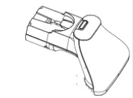 |
| 3 | Adapter | 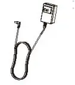 |
| 4 | Brush Roller Cover | 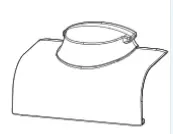 |
| 5 | Brush Roller | 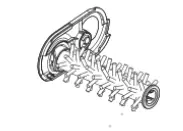 |
| 6 | Filter |  |
| 7 | Accessory Holder | 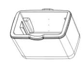 |
| 8 | Charging Base |  |
| 9 | Battery | 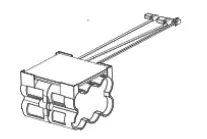 |
| 10 | Motor |  |
| 11 | Wire | 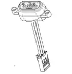 |
| 12 | Switch (recline detection) |  |
| 13 | PCBA | 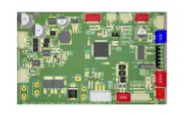 |
| 14 | PCBA (handle) | |
| 15 | Sensor （water level） | 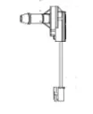 |
| 16 | Pump | 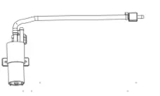 |
| 17 | Flexible Extension Hose | 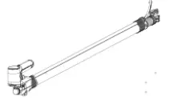 |
| 18 | Clean Water Tank | |
| 19 | Dirt Water Tank | |
| 20 | Cleaning Solution |
Wiring diagram
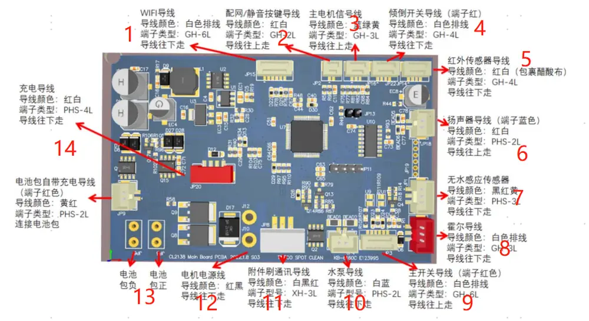
| No | |
|---|---|
| 1 | Wifi wire |
| 2 | Mute |
| 3 | Motor signal |
| 4 | Switch （recline detection） |
| 5 | Dirt sensor |
| 6 | Speaker |
| 7 | Water level sensor |
| 8 | Hall wire |
| 9 | Main switch |
| 10 | pump |
| 11 | Power brush |
| 12 | Motor power supply |
| 13 | battery |
| 14 | Charging wire |
Tear down Guide
Remove all detachable parts (CWT, DWT, brush).
Unscrew and remove the white decorative cover from the main body.
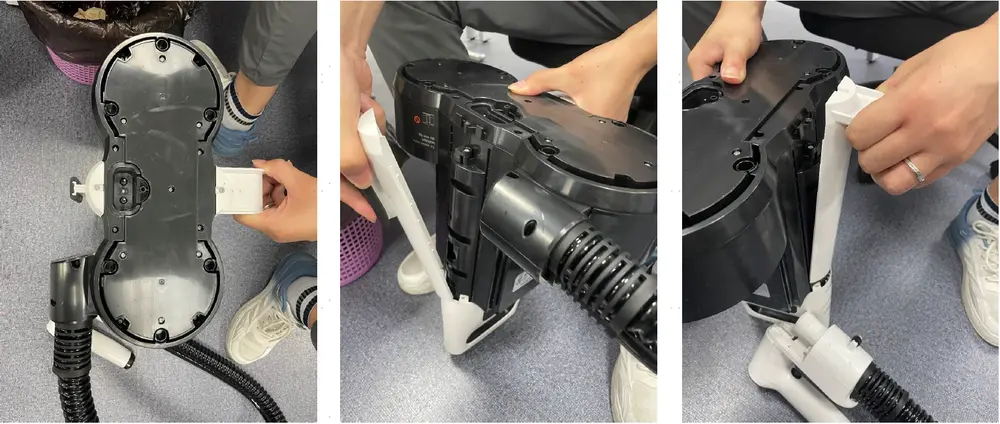
Remove the black bottom plate of the main body.
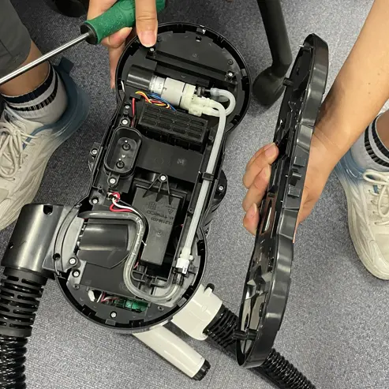
Unscrew and remove the black plastic cover from the hose
.
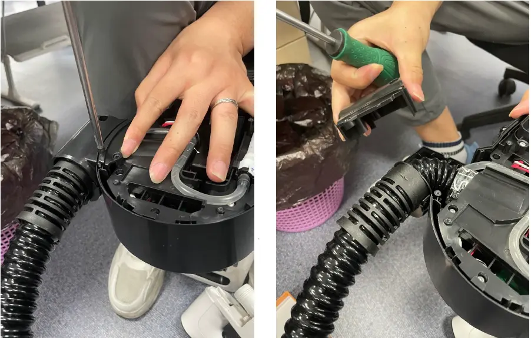
Unscrew and remove the black decorative cover from the bottom.
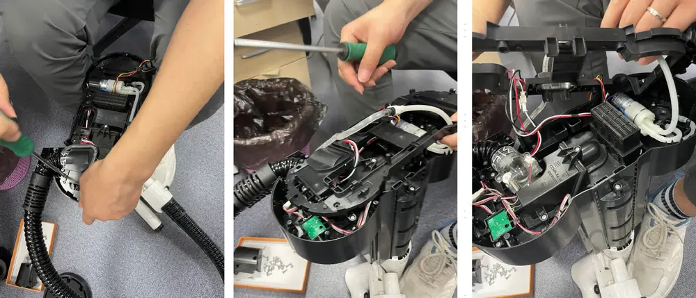
Unscrew the screws securing the hose, disconnect the terminals, and remove the hose.
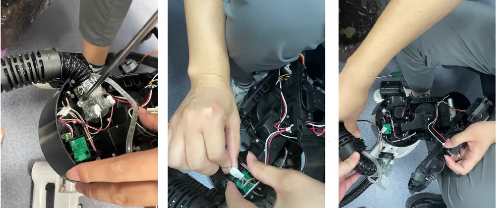
Unscrew the screws securing the water pump, and remove the water pump and liquid level sensor.
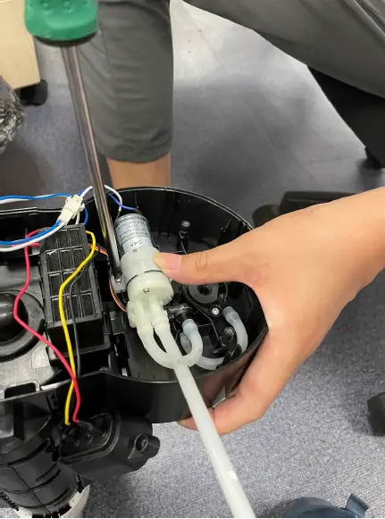
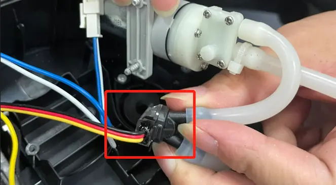
Unscrew and remove the white decorative cover and handle from the main body.
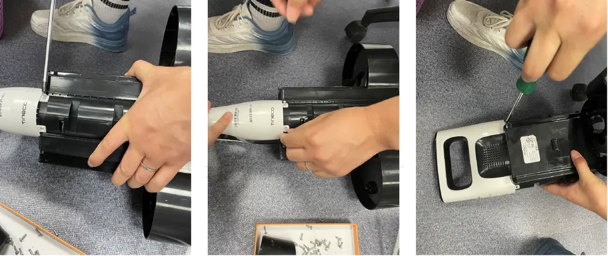
Remove the control panel.
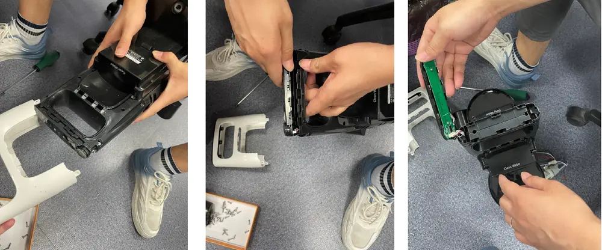
Remove the remaining screws from the main body and open the main body.
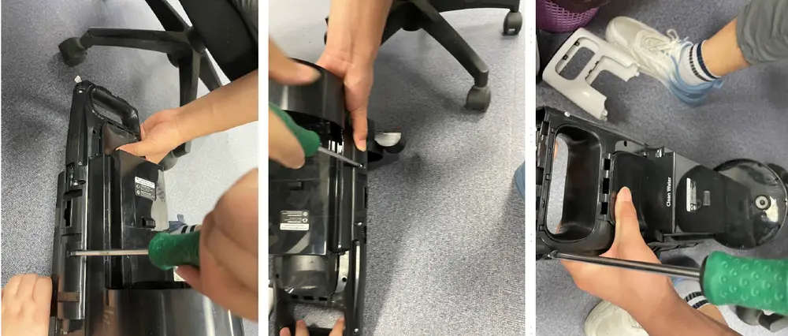
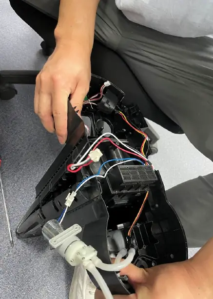
Remove the motor.
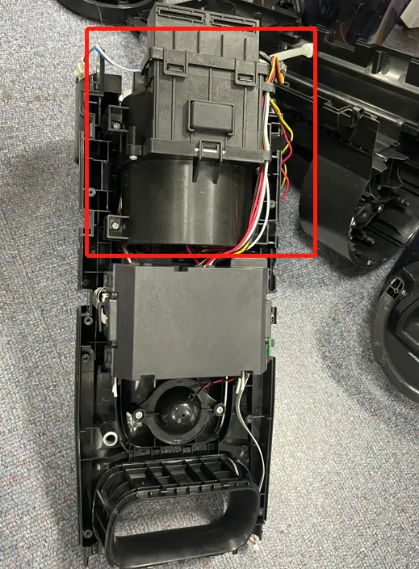
Open the black cover.
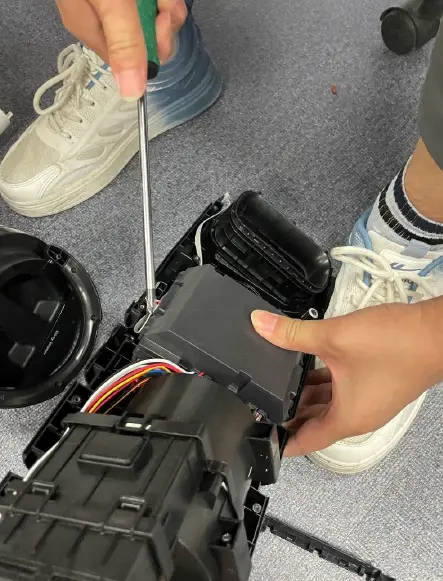
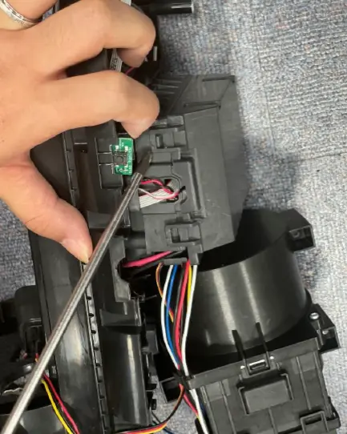
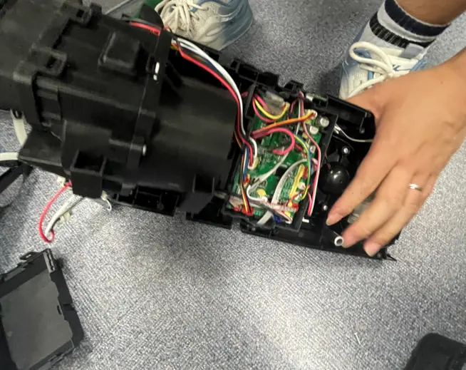
Remove the PCBA and battery.
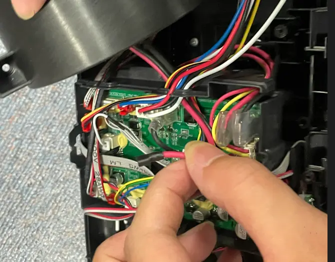
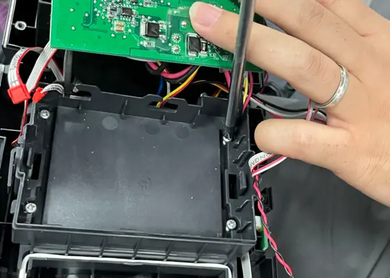
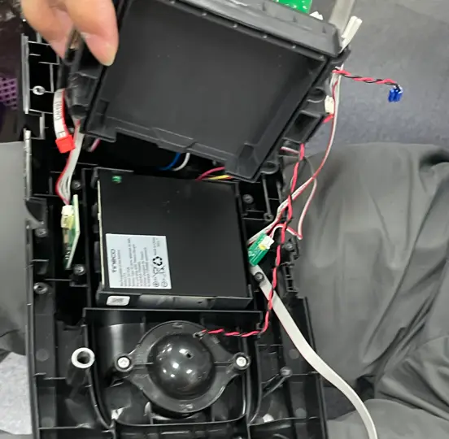
Repair Guide
| Failure System | Failure Phenomenon | No | Failure Mode | Repair Solution | Spare Parts |
|---|---|---|---|---|---|
| Water circulation system failure | No/less spray water | 1 | CWT failure | replace CWT | CWT |
| 2 | spray hole blocked | clean spray hole | maintenance | ||
| 3 | spray hole damaged | replace hose | hose | ||
| 4 | CWT seal ring rubber failure | replace CWT seal ring | CWT seal ring | ||
| 5 | pump failure | replace pump | pump | ||
| 6 | main pcba failure | replace main pcba | main pcba | ||
| 7 | pipe blocked | replace water pipe | water pipe | ||
| 8 | pipe bent or broken | fix or replace pipe | water pipe | ||
| 9 | water level sensor blocked | replace water level sensor | water level sensor | ||
| leaking water | 10 | CWT leaking water | replace CWT | CWT | |
| 11 | hose damaged | replace hose | hose | ||
| 12 | pump failure | replace pump | pump | ||
| 13 | water level sensor damaged | replace water level sensor | water level sensor | ||
| 14 | water pipe damaged | replace water pipe | water pipe | ||
| no suck up water | 15 | Debris channel /Air duct blocked | empty DWT；clean power brush (including brush roller and brush roller cover), make sure there is no blockage in suction nozzle; clean cotton filter under CWT and filter under DWT | maintenance | |
| 16 | power brush damaged | replace power brush | power brush | ||
| 17 | hose damaged | replace hose | hose | ||
| 18 | motor failure | replace main motor | main motor | ||
| 19 | main pcba failure | replace main pcba | main pcba | ||
| charging failure | No response when charging | 20 | adapter failure | replace adapter | adapter |
| 21 | charging base wire failure | replace charging base | charging base * only for carpet one spot | ||
| 22 | charging base poor contact | replace charging base | charging base * only for carpet one spot | ||
| 23 | main body wire damage | replace body wire | wire | ||
| 24 | battery pack failure | replace battery pack | battery pack | ||
| 25 | Main PCBA failure | replace main PCBA | main PCBA | ||
| 26 | display screen failure | replace display screen | display screen | ||
| Battery indicator flashes several times and then goes off, then the machine stop charging; charging interrupted | 27 | battery pack failure | replace battery pack | battery pack | |
| 28 | adapter failure | replace adapter | adapter | ||
| 29 | switch(recline detection) failure | replace switch | switch | ||
| Turn on failure | After pressing the power button, the unit has no reaction , screen not light up | 30 | handle/switch button failure | replace handle assembly | handle assembly |
| 31 | battery pack failure | replace battery pack | battery pack | ||
| 32 | Main PCBA failure | replace main PCBA | main PCBA | ||
| After pressing the power button, the display lights up, but the unit doesn't work | 33 | switch button on hose failure | replace hose | hose | |
| 34 | Motor failure | replace motor | motor | ||
| 35 | Main PCBA failure | replace main PCBA | main PCBA | ||
| stop running after several times screen dies out | 36 | motor failure | replace motor | motor | |
| 37 | Main PCBA failure | replace main PCBA | main PCBA | ||
| 38 | battery pack failure | replace battery pack | battery pack | ||
| mode switch failure | switch mode but no reaction | 39 | mode switch button failure | replace hose | hose |
| 40 | Main PCBA failure | replace main PCBA | main PCBA | ||
| switch mode but auto power-off | 41 | Main PCBA failure | replace main PCBA | main PCBA | |
| 42 | battery pack failure | replace battery pack | battery pack | ||
| 43 | motor failure | replace motor | motor | ||
| False alarm | DWT water is full but no alarm/Water is not full but still alarm | 44 | DWT full | empty DWT；clean power brush (including brush roller and brush roller cover), make sure there is no blockage in suction nozzle; clean cotton filter under CWT and filter under DWT | maintenance |
| 45 | DWT floater stuck or damaged | reset floater or replace DWT | DWT | ||
| 46 | DWT damaged | replace DWT | DWT | ||
| 47 | PCBA failure | replace PCBA | PCBA | ||
| DWT is installed but still alarm need install DWT | 48 | Software problem | Firmware upgrade | ||
| 49 | DWT damaged | replace DWT | DWT | ||
| 50 | PCBA failure | replace PCBA | PCBA | ||
| CWT have enough water but still alarm, and no water spray out from outlet. | 51 | CWT failure | replace CWT | CWT | |
| 52 | spray hole blocked | clean spray hole | maintenance | ||
| 53 | spray hole damaged | replace hose | hose | ||
| 54 | CWT seal ring rubber failure | replace CWT seal ring | CWT seal ring | ||
| 55 | pump failure | replace pump | pump | ||
| 56 | main pcba failure | replace main pcba | main pcba | ||
| 57 | pipe blocked | replace water pipe | water pipe | ||
| 58 | pipe bent or broken | fix or replace pipe | water pipe | ||
| 59 | water level sensor blocked | replace water level sensor | water level sensor | ||
| CWT have enough water but still alarm, and the machine spraying water normally; CWT have no water but not alarm | 60 | water level sensor failure | replace water level sensor | water level sensor | |
| 61 | main PCBA failure | replace main PCBA | main PCBA | ||
| Brush roller indicator blinking | 62 | brush roller motor failure | replace brush roller motor | brush roller motor | |
| 63 | power brush failure | replace power brush | power brush | ||
| 64 | Main PCBA failure | replace main PCBA | main PCBA | ||
| 65 | hose damaged | replace hose | hose | ||
| iloop ring always red | 66 | Debris channel /Air duct blocked | empty DWT；clean power brush (including brush roller and brush roller cover), make sure there is no blockage in suction nozzle; clean cotton filter under CWT and filter under DWT | maintenance | |
| 67 | dirty sensor failure | replace dirty sensor | dirty sensor | ||
| 68 | Main PCBA failure | replace main PCBA | main PCBA | ||
| 69 | display screen failure | replace display screen | display screen | ||
| iloop ring always blue | 70 | dirty sensor failure | replace dirty sensor | dirty sensor | |
| 71 | Main PCBA failure | replace main PCBA | main PCBA | ||
| 72 | display screen failure | replace display screen | display screen | ||
| voice prompt reminds that appliance not upright | 73 | switch(recline detection) failure | replace switch | switch | |
| 74 | Main PCBA failure | replace main PCBA | main PCBA | ||
| screen display malfunction | screen not reaction/display incomplete/display blinking | 75 | display screen failure | replace display screen | display screen |
| 76 | Main PCBA failure | replace main PCBA | main PCBA | ||
| abnormal noise | motor noise | 77 | motor failure | replace main motor | main motor |
| brush noise | 78 | Brush roller blocked | Clean the debris channel blockage、debris wrapped around the brush roller 、suction nozzle blockage; | maintenance | |
| 79 | power brush failure | replace power brush | power brush | ||
| pump noise | 80 | pump noise | replace pump | pump | |
| Self-cleaning malfunction | press the self-cleaning button,Voice Prompt remind that the unit should be connected to charging base/adapter | 81 | adapter failure | replace adapter | adapter |
| 82 | Poor charging contact | replace repair charging chip | repair charging chip | ||
| 83 | charging base failure | replace charging base | charging base | ||
| 84 | Main body charging wire failure | replace wire | wire | ||
| 85 | battery pack failure | replace battery pack | battery pack | ||
| 86 | Main PCBA failure | replace main PCBA | main PCBA | ||
| press the self-cleaning button,Voice Prompt remind that power brush not installed | 87 | power brush failure | replace power brush | power brush | |
| 88 | hose damaged | replace hose | hose | ||
| 89 | Main PCBA failure | replace main PCBA | main PCBA | ||
| press the self-cleaning button but no reaction | 90 | handle failure | replace handle | handle | |
| 91 | Battery failure | replace battery | battery | ||
| 92 | Main PCBA failure | replace main PCBA | main PCBA | ||
| self-cleaning cannot stop | 93 | Main PCBA failure | replace main PCBA | main PCBA | |
| after finish self-cleaning program still remind “Please begin self-cleaning cycle” | 94 | Main PCBA failure | replace main PCBA | main PCBA | |
| Brush roller not spinning | Brush roller stop spinning, and the machine alarm brush abnormal | 95 | brush roller is blocked | clean brush roller | maintenance |
| 96 | power brush failure | replace power brush | power brush | ||
| 97 | Main PCBA failure | replace main PCBA | main PCBA | ||
| Brush roller not spinning with no alarm | 98 | power brush failure | replace power brush | power brush | |
| 99 | Main PCBA failure | replace main PCBA | main PCBA |